İndiki Qarabağın
ərazisi indiki Azərbaycan Respublikasının (Dağıstanın cənub hissəsi) hüdudlarında
eramızdan əvvəl IV əsrin sonlarından eramızın VIII əsrinin əvvəllərinədək mövcud olmuş
Alban dövlətinin tərkibinə daxil idi.
Qarabağ zonasının müstəmləkələşdirilməsi və əhalisinin qriqorianlaşdırılması VIII əsrin əvvəllərində Alban dövlətinin süqutundan sonra - Cənubi Qafqazı ələ keçirən ərəblər avtokefal Alban kilsəsinin erməni kilsəsinə tabe olmasına razılıq verdikdən sonra baş verdi. Məhz həmin dövrdən Qarabağın alban əhalisinin qriqorianlaşdırılmasına başlanıldı. Qarabağ albanlarının erməniləşdirilməsi isə xeyli sonra – XII əsrin əvvəllərində baş vermiş prosesdir [1]. Deməli, Qarabağın ermənidilli əhalisi (XIX əsrdə İran və Türkiyədən buraya köçürülənlərdən başqa) qədim albanların erməniləşmiş nəsilləridir.
IX əsrin ortalarında Ərəb xilafətinin tənəzzülü nəticəsində Alban nəslinin nümayəndəsi Qriqori Hammam xilafətin tənəzzülə uğratdığı Alban çarlığını bərpa etdi [2]. XII əsrin sonlarında bu ərazidə Xaçın knyazlığı yaradılır. Həsən-Cəlalın (1215-1261) hakimiyyəti dövründə knyazlıq intibah dövrünü yaşayırdı. Həsən Cəlal erməni, gürcü və fars mənbələrində "Albaniya çarı", "Albaniya sərhəd vilayətlərinin qüdrətli hökmdarı" adlandırılırdı [3].
Monqol hökmranlığı başa çatdıqdan sonra Qarabağ Qaraqoyunlu (1410-1468) və Ağqoyunlu (1468-1501) kimi Azərbaycan dövlətlərinin tərkibində idi. Qaraqoyunlu hökmdarı Cahanşahın hakimiyyəti dövründə Həsən-Cəlal "məlik" ("mülk" sahibi) titulunu aldı. Sonralar həmin torpaqlar Azərbaycan Səfəvilər dövlətinin (1501-1736) tərkibinə daxil oldu. Səfəvilərin dövründə Qarabağ ərazisi Gəncə-Qarabağ bəylərbəyliyinin (canişinliyinin) tərkibinə daxil idi. Bu zaman Həsən-Cəlalın nəslinin mülkiyyəti beş knyazlığa – məlikliyə (Gülüstan, Çiləbörd, Xaçın, Vərəndə, Dizaq) bölünmüşdü ki, onların da əhalisi xristian idi. Erməni tarixçiləri tarixi faktları saxtalaşdıraraq, bu beş məlikliyi "erməni dövlətçiliyi irsi" kimi qələmə verirdilər, halbuki əslində bu məliklər müstəqil deyildilər və Gəncə-Qarabağ bəylərbəylərinə tabe idilər. Burada qeyd etmək yerinə düşərdi ki, statistik məlumatlara əsasən, bu bəylərbəyliyinin, o cümlədən Qarabağ ərazisinin əhalisinin mütləq əksəriyyətini müsəlmanlar təşkil edirdi. Belə ki, 1725-1727-ci illərdə aparılan əhalinin siyahıyaalması Gəncə-Qarabağ əyalətində 19395 vergi ödəyicisindən 11818 vergi ödəyicisinin müsəlman (onların 11068-si Azərbaycan türkləridir) və sadəcə 7577-nin qeyri-müsəlman (ermənilər də daxil olmaqla) olduğunu göstərmişdir. [4]
Səfəvilər dövlətinin varlığına son qoyan Nadir şah Qacar (1736-1747) Gəncə-Qarabağ bəylərbəylərini zəiflətmək üçün məlikləri onların tabeliyindən çıxarmışdı. Məliklər bundan istifadə edərək separatçılıq fəaliyyətinə başladılar ki, buna qarşı da Qarabağ xanlığının banisi Pənahəli xan mübarizə aparmalı oldu.
Qarabağ zonasının müstəmləkələşdirilməsi və əhalisinin qriqorianlaşdırılması VIII əsrin əvvəllərində Alban dövlətinin süqutundan sonra - Cənubi Qafqazı ələ keçirən ərəblər avtokefal Alban kilsəsinin erməni kilsəsinə tabe olmasına razılıq verdikdən sonra baş verdi. Məhz həmin dövrdən Qarabağın alban əhalisinin qriqorianlaşdırılmasına başlanıldı. Qarabağ albanlarının erməniləşdirilməsi isə xeyli sonra – XII əsrin əvvəllərində baş vermiş prosesdir [1]. Deməli, Qarabağın ermənidilli əhalisi (XIX əsrdə İran və Türkiyədən buraya köçürülənlərdən başqa) qədim albanların erməniləşmiş nəsilləridir.
IX əsrin ortalarında Ərəb xilafətinin tənəzzülü nəticəsində Alban nəslinin nümayəndəsi Qriqori Hammam xilafətin tənəzzülə uğratdığı Alban çarlığını bərpa etdi [2]. XII əsrin sonlarında bu ərazidə Xaçın knyazlığı yaradılır. Həsən-Cəlalın (1215-1261) hakimiyyəti dövründə knyazlıq intibah dövrünü yaşayırdı. Həsən Cəlal erməni, gürcü və fars mənbələrində "Albaniya çarı", "Albaniya sərhəd vilayətlərinin qüdrətli hökmdarı" adlandırılırdı [3].
Monqol hökmranlığı başa çatdıqdan sonra Qarabağ Qaraqoyunlu (1410-1468) və Ağqoyunlu (1468-1501) kimi Azərbaycan dövlətlərinin tərkibində idi. Qaraqoyunlu hökmdarı Cahanşahın hakimiyyəti dövründə Həsən-Cəlal "məlik" ("mülk" sahibi) titulunu aldı. Sonralar həmin torpaqlar Azərbaycan Səfəvilər dövlətinin (1501-1736) tərkibinə daxil oldu. Səfəvilərin dövründə Qarabağ ərazisi Gəncə-Qarabağ bəylərbəyliyinin (canişinliyinin) tərkibinə daxil idi. Bu zaman Həsən-Cəlalın nəslinin mülkiyyəti beş knyazlığa – məlikliyə (Gülüstan, Çiləbörd, Xaçın, Vərəndə, Dizaq) bölünmüşdü ki, onların da əhalisi xristian idi. Erməni tarixçiləri tarixi faktları saxtalaşdıraraq, bu beş məlikliyi "erməni dövlətçiliyi irsi" kimi qələmə verirdilər, halbuki əslində bu məliklər müstəqil deyildilər və Gəncə-Qarabağ bəylərbəylərinə tabe idilər. Burada qeyd etmək yerinə düşərdi ki, statistik məlumatlara əsasən, bu bəylərbəyliyinin, o cümlədən Qarabağ ərazisinin əhalisinin mütləq əksəriyyətini müsəlmanlar təşkil edirdi. Belə ki, 1725-1727-ci illərdə aparılan əhalinin siyahıyaalması Gəncə-Qarabağ əyalətində 19395 vergi ödəyicisindən 11818 vergi ödəyicisinin müsəlman (onların 11068-si Azərbaycan türkləridir) və sadəcə 7577-nin qeyri-müsəlman (ermənilər də daxil olmaqla) olduğunu göstərmişdir. [4]
Səfəvilər dövlətinin varlığına son qoyan Nadir şah Qacar (1736-1747) Gəncə-Qarabağ bəylərbəylərini zəiflətmək üçün məlikləri onların tabeliyindən çıxarmışdı. Məliklər bundan istifadə edərək separatçılıq fəaliyyətinə başladılar ki, buna qarşı da Qarabağ xanlığının banisi Pənahəli xan mübarizə aparmalı oldu.
Zaqafqaziyada Rusiya hakimiyyəti
kütləvi köçün başlanğıcıdır
Bəzi məliklər öz mövqelərini
möhkəmləndirmək üçün regionda güclənməkdə olan Rusiya imperiyasına ümid bəsləyir və
Qarabağ xanlığının ələ keçirilməsinə kömək etməyə çalışırdılar. 1805-ci ildə Qarabağ
xanı İbrahimxəlil xan Rusiya İmperiyası ilə Kürəkçay müqaviləsini imzalayır, onun
mətnində isə nə məliklər, nə də ermənilər haqqında qeyd var. Müqaviləyə əsasən, Qarabağ
xanlığı Azərbaycan torpağı kimi Rusiya İmperiyasının protektoratını qəbul edirdi [5].
1822-ci ildə xanlıq ləğv edildi və onun yerində Qarabağ əyaləti yaradıldı. Bu hadisədən sonra Rusiya İmperiyası hakimiyyəti vergi miqdarını müəyyənləşdirmək və vergitutmanı nizama salmaq üçün əhalinin sayını hesablamaq qərarına gəldi. 1823-cü ildə aparılmış siyahıyaalma nəticəsində məlum oldu ki, əvvəllər olduğu kimi, Qarabağın yerli sakinləri olan azərbaycanlılar əhalinin əksəriyyətini təşkil edirlər, halbuki 1804-1813 və 1826-1828-ci illərdə Rusiya-İran müharibələri zamanı minlərlə azərbaycanlı öz yaşayış yerini tərk edərək Araz çayının o tayına qaçmışdı. Belə ki, Qarabağ əyalətində azərbaycanlıların sayı 91%-ə, ermənilərin sayı isə 8,4%-ə bərabər idi [6].
Məlum olduğu kimi, Rusiya ilə İran arasında Türkmənçay müqaviləsi (1828) imzalandıqdan sonra İranda yaşayan ermənilərin Azərbaycana köçürülməsinə başlanılmışdır. Ermənilərin məskunlaşdırıldığı əsas regionlar keçmiş İrəvan və Naxçıvan xanlıqlarının torpaqları olsa da, Qarabağ ərazisi də ermənilərin kütləvi şəkildə köçürülməsinə məruz qalan region idi.
1822-ci ildə xanlıq ləğv edildi və onun yerində Qarabağ əyaləti yaradıldı. Bu hadisədən sonra Rusiya İmperiyası hakimiyyəti vergi miqdarını müəyyənləşdirmək və vergitutmanı nizama salmaq üçün əhalinin sayını hesablamaq qərarına gəldi. 1823-cü ildə aparılmış siyahıyaalma nəticəsində məlum oldu ki, əvvəllər olduğu kimi, Qarabağın yerli sakinləri olan azərbaycanlılar əhalinin əksəriyyətini təşkil edirlər, halbuki 1804-1813 və 1826-1828-ci illərdə Rusiya-İran müharibələri zamanı minlərlə azərbaycanlı öz yaşayış yerini tərk edərək Araz çayının o tayına qaçmışdı. Belə ki, Qarabağ əyalətində azərbaycanlıların sayı 91%-ə, ermənilərin sayı isə 8,4%-ə bərabər idi [6].
Məlum olduğu kimi, Rusiya ilə İran arasında Türkmənçay müqaviləsi (1828) imzalandıqdan sonra İranda yaşayan ermənilərin Azərbaycana köçürülməsinə başlanılmışdır. Ermənilərin məskunlaşdırıldığı əsas regionlar keçmiş İrəvan və Naxçıvan xanlıqlarının torpaqları olsa da, Qarabağ ərazisi də ermənilərin kütləvi şəkildə köçürülməsinə məruz qalan region idi.
1828-ci ilin
mayında Persiyadan (İran) ilk 147 erməni ailəsi Qarabağa gəldi. [7] 1828-ci il iyun ayının ortalarına olan məlumata əsasən, burada
yerləşdirilmiş erməni köçkünlərin ümumi sayı 7458 ailə təşkil edirdi ki, onlardan 3900-ü
keçmiş İrəvan xanlığında, 2363-ü keçmiş Naxçıvan xanlığında, 535-i isə Qarabağ
əyalətində məskunlaşdırılmışdı. [8]
Ermənilərin kütləvi şəkildə Qarabağa köçürülməsindən sonra burada Marağalı (ermənilərin məskunlaşdığı Marağa şəhərinin adı ilə), Canyataq və s. kimi yeni erməni kəndləri meydana gəlməyə başlamışdı. Maraqlıdır ki, 1978-ci ildə Azərbaycan SSR-in Dağlıq Qarabağ Muxtar Vilayətinin Mardakert rayonunda (indiki Azərbaycan Respublikasının Ağdərə rayonu) ermənilərin Qarabağa köçürülməsinin 150 illiyi münasibətilə abidə ucaldılmışdı. Bu abidənin üzərində ermənicə "Marağa-150" sözləri həkk olunmuşdu. Lakin 1988-ci ildə Dağlıq Qarabağda erməni separatizminin yeni dalğası zamanı bu yazı silinmişdi.
Ermənilərin kütləvi şəkildə Qarabağa köçürülməsindən sonra burada Marağalı (ermənilərin məskunlaşdığı Marağa şəhərinin adı ilə), Canyataq və s. kimi yeni erməni kəndləri meydana gəlməyə başlamışdı. Maraqlıdır ki, 1978-ci ildə Azərbaycan SSR-in Dağlıq Qarabağ Muxtar Vilayətinin Mardakert rayonunda (indiki Azərbaycan Respublikasının Ağdərə rayonu) ermənilərin Qarabağa köçürülməsinin 150 illiyi münasibətilə abidə ucaldılmışdı. Bu abidənin üzərində ermənicə "Marağa-150" sözləri həkk olunmuşdu. Lakin 1988-ci ildə Dağlıq Qarabağda erməni separatizminin yeni dalğası zamanı bu yazı silinmişdi.
Ermənilərin
kütləvi şəkildə Qarabağa köçürülməsi onların regionda sayının artmasına təsir göstərdi.
Bunu 1832-ci ildə Şuşa şəhərində və Qarabağ əyalətinin 741 kəndində aparılan kameral
siyahıyaalmanın nəticələrindən də görmək olar. Ümumilikdə əyalət üzrə 20546 ailə (54841
kişi daxil olmaqla), Şuşa şəhərində isə 1698 ailə (5079 kişi daxil olmaqla) siyahıya
alınmışdı. Etnik tərkibə görə siyahıyaalma aşağıdakı mənzərəni ortaya çıxardı [9]:
1832-ci ildə
aparılan kameral siyahıyaalmanın nəticələrinə əsasən, həm ümumilikdə əyalətdə (68%), həm
də Şuşa şəhərində (55%) əhalinin əksəriyyətini azərbaycanlılar təşkil edirdi.
Özü də ermənilərin Qarabağ regionunda fəal şəkildə məskunlaşdırılmasına baxmayaraq. Bununla yanaşı, tədqiqatçılar qeyd edirlər ki, köçürmə siyasəti nəticəsində XIX əsrin 30-cu illərinin əvvəllərində azərbaycanlıların sayı 64,8%-ə düşmüş, ermənilərin sayı isə 34,8%-ə yüksəlmişdi [10]. Əgər XIX əsrin 30-cu illərində azərbaycanlılar Şuşa əhalisinin yarıdan çoxunu təşkil edirdisə, [11] əsrin ortalarında onların xüsusi çəkisi 48,6%-ə qədər azalır [12] .
1868-ci ildə Yelizavetpol quberniyası yaradıldıqdan sonra Qarabağ regionu onun tərkibinə daxil edilmişdi. Şuşa şəhəri, Cəbrayıl, Cavanşir, Zəngəzur və Şuşa qəzaları tarixi Qarabağ ərazisi idi və 1886-cı ildə həmin ərazidə əhalinin növbəti siyahıyaalması aparılmışdı. Statistik məlumatlar azərbaycanlı və erməni əhalinin say nisbətinin aşağıdakı mənzərəsini ortaya çıxardı [13]:
Özü də ermənilərin Qarabağ regionunda fəal şəkildə məskunlaşdırılmasına baxmayaraq. Bununla yanaşı, tədqiqatçılar qeyd edirlər ki, köçürmə siyasəti nəticəsində XIX əsrin 30-cu illərinin əvvəllərində azərbaycanlıların sayı 64,8%-ə düşmüş, ermənilərin sayı isə 34,8%-ə yüksəlmişdi [10]. Əgər XIX əsrin 30-cu illərində azərbaycanlılar Şuşa əhalisinin yarıdan çoxunu təşkil edirdisə, [11] əsrin ortalarında onların xüsusi çəkisi 48,6%-ə qədər azalır [12] .
1868-ci ildə Yelizavetpol quberniyası yaradıldıqdan sonra Qarabağ regionu onun tərkibinə daxil edilmişdi. Şuşa şəhəri, Cəbrayıl, Cavanşir, Zəngəzur və Şuşa qəzaları tarixi Qarabağ ərazisi idi və 1886-cı ildə həmin ərazidə əhalinin növbəti siyahıyaalması aparılmışdı. Statistik məlumatlar azərbaycanlı və erməni əhalinin say nisbətinin aşağıdakı mənzərəsini ortaya çıxardı [13]:
1897-ci ildə
Ümumrusiya əhalinin siyahıya alınması aparıldı. Onun Qarabağla bağlı nəticələri
aşağıdakı kimi idi [14]:
Verilmiş
cədvəllərdən göründüyü kimi, XIX əsrin sonlarında Qarabağın bəzi ərazilərində (Şuşa,
Şuşa və Zəngəzur qəzalarında) ermənilərin sayı artmışdı ki, bu da erməni tarixçilərinin
Qarabağda erməni etnik elementinin üstünlük təşkil etdiyini iddia etməsinə "əsas" verir.
Bununla belə, ermənilərin Qarabağ əhalisinin tərkibində mütləq əksəriyyət əldə edə
bilməmələri faktı dilə gətirilmir. Ermənilərin sayının artmasının Rusiya hökumətinin
köçürmə siyasəti və təbii artım nəticəsində baş verdiyi, bunun ermənilərin Qarabağda
daim və fasiləsiz olaraq üstünlük təşkil etdiyini təsdiqləmək üçün əsas sayıla
bilməyəcəyi də nəzərə alınmır.
Üstəlik, coğrafi və statistik məlumatların sərbəst interpretasiyası ona gətirib çıxarır ki, erməni müəlliflər Qarabağın dağlıq hissəsini bütövlükdə Qarabağ regionundan ayrılıqda nəzərdən keçirir və rəqəmlərlə manipulyasiya edərək ermənilərin azərbaycanlılardan üstün olduğunu sübut etməyə çalışırlar. Lakin tarixi faktlar danılmaz şəkildə sübut edir ki, nə qədimdə, nə orta əsrlərdə, nə də müasir dövrdə "Dağlıq Qarabağ" mövcud olmayıb. Qarabağ həmişə vahid coğrafi, inzibati, siyasi məfhum kimi nəzərdən keçirilib və həmişə Azərbaycanın tərkibində olub.
"Qafqaz təqvimi"nin 1 yanvar 1916-cı il tarixinə [15] (Rusiya İmperiyasının süqutundan əvvəlki ilə) olan statistikasına nəzər salsaq, Qarabağ əhalisinin etnik tərkibinin keyfiyyət dəyişikliklərinə məruz qalmadığını görmək olar.
Üstəlik, coğrafi və statistik məlumatların sərbəst interpretasiyası ona gətirib çıxarır ki, erməni müəlliflər Qarabağın dağlıq hissəsini bütövlükdə Qarabağ regionundan ayrılıqda nəzərdən keçirir və rəqəmlərlə manipulyasiya edərək ermənilərin azərbaycanlılardan üstün olduğunu sübut etməyə çalışırlar. Lakin tarixi faktlar danılmaz şəkildə sübut edir ki, nə qədimdə, nə orta əsrlərdə, nə də müasir dövrdə "Dağlıq Qarabağ" mövcud olmayıb. Qarabağ həmişə vahid coğrafi, inzibati, siyasi məfhum kimi nəzərdən keçirilib və həmişə Azərbaycanın tərkibində olub.
"Qafqaz təqvimi"nin 1 yanvar 1916-cı il tarixinə [15] (Rusiya İmperiyasının süqutundan əvvəlki ilə) olan statistikasına nəzər salsaq, Qarabağ əhalisinin etnik tərkibinin keyfiyyət dəyişikliklərinə məruz qalmadığını görmək olar.
Göründüyü kimi,
azərbaycanlılar region əhalisi arasında sayca üstünlüyü qoruyub saxlayırdılar. Şuşa
şəhəri və Şuşa qəzasının əhalisi arasında onların sayının artması da müşahidə olunurdu -
bu proses XIX əsrin sonlarından etibarən başlamışdı.
Qarabağın müsəlman əhalisi 1905-1906-cı illərdə erməni daşnaklarının törətdiyi qırğınlar nəticəsində ciddi zərər çəksə də, ermənilər azərbaycanlı əhalinin tamamilə Qarabağdan qovulmasına və sayının kəskin şəkildə azaldılmasına nail ola bilmədilər.
Azərbaycan Respublikasının Dövlət Arxivində (ARDA) Azərbaycan Respublikası Xarici İşlər Nazirliyi yanında İnformasiya şöbəsinin rəisi Aleksandr Şepotyevin 1919-cu ilin sonunda tərtib olunmuş "Azərbaycan türklərinin öz müqəddəratını təyin etmək hüququna malik olduqları mübahisəli Qafqaz əraziləri haqqında" məruzəsi var.
A.Şepotyev qeyd edirdi ki, "Qafqaz təqvimi"nin Qarabağın erməni əhalisi haqqında 1 yanvar 1916-cı il tarixinə olan statistik məlumatlarına tənqidi yanaşılmalıdır, çünki "Qarabağ ermənilərinin sayına təkcə Bakıda 30000-ə yaxın olmaqla, Rostova qədər səpələnmiş və əslində Qarabağın oturaq əhalisini təşkil etməyən çox sayda fəhlə və sənətkar da aid edilirdi".
Qarabağın müsəlman əhalisi 1905-1906-cı illərdə erməni daşnaklarının törətdiyi qırğınlar nəticəsində ciddi zərər çəksə də, ermənilər azərbaycanlı əhalinin tamamilə Qarabağdan qovulmasına və sayının kəskin şəkildə azaldılmasına nail ola bilmədilər.
Azərbaycan Respublikasının Dövlət Arxivində (ARDA) Azərbaycan Respublikası Xarici İşlər Nazirliyi yanında İnformasiya şöbəsinin rəisi Aleksandr Şepotyevin 1919-cu ilin sonunda tərtib olunmuş "Azərbaycan türklərinin öz müqəddəratını təyin etmək hüququna malik olduqları mübahisəli Qafqaz əraziləri haqqında" məruzəsi var.
A.Şepotyev qeyd edirdi ki, "Qafqaz təqvimi"nin Qarabağın erməni əhalisi haqqında 1 yanvar 1916-cı il tarixinə olan statistik məlumatlarına tənqidi yanaşılmalıdır, çünki "Qarabağ ermənilərinin sayına təkcə Bakıda 30000-ə yaxın olmaqla, Rostova qədər səpələnmiş və əslində Qarabağın oturaq əhalisini təşkil etməyən çox sayda fəhlə və sənətkar da aid edilirdi".
Onun məlumatlarına əsasən, Rusiya İmperiyasının süqutundan sonra Qarabağda
ermənilərin real sayı 170 min,
müsəlmanların sayı isə 415 min nəfər təşkil edirdi.
Dağlıq Qarabağın
erməni əhalisi, sözsüz ki, azlıq, özü də dağətəyi rayonun dar, kəsişmə zolağında
cəmlənmiş, hər tərəfdən bütünlüklə türk əhali ilə əhatə olunmuş bütöv kütlədən ibarət
azlıq təşkil edirdi [16] .
Rusiya İmperiyasının Daxili İşlər Nazirliyinin Polis Departamentinin sənədlərində qeyd edildiyi kimi, 1905-ci il hadisələri zamanı daşnaklar bir növ öz məqsədinə nail olmuşdular: ermənilərin Cənubi Qafqaz ərazisində müsəlmanlardan ayrılması və Osmanlı İmperiyası və İrandakı erməni köçkünlərin məskunlaşması üçün torpaqların boşaldılması. Mənbənin məlumatlarına əsasən, Yelizavetpol və İrəvan quberniyalarında və Qars vilayətində ermənilər müsəlman ailələrin oradan qaçması sayəsində bu məqsədə nail olmuşdular [17] .
İlk qanlı toqquşmalar 1905-ci ilin fevralında Bakıda baş vermiş, sonra isə münaqişə Cənubi Qafqazın erməni və azərbaycanlı əhalinin yaşadığı digər regionlarına da keçmişdi. Bu regionlardan biri də 1868-ci ildən Yelizavetpol quberniyasının tərkibinə daxil olan Qarabağ idi.
Rusiya İmperiyasının Daxili İşlər Nazirliyinin Polis Departamentinin sənədlərində qeyd edildiyi kimi, 1905-ci il hadisələri zamanı daşnaklar bir növ öz məqsədinə nail olmuşdular: ermənilərin Cənubi Qafqaz ərazisində müsəlmanlardan ayrılması və Osmanlı İmperiyası və İrandakı erməni köçkünlərin məskunlaşması üçün torpaqların boşaldılması. Mənbənin məlumatlarına əsasən, Yelizavetpol və İrəvan quberniyalarında və Qars vilayətində ermənilər müsəlman ailələrin oradan qaçması sayəsində bu məqsədə nail olmuşdular [17] .
İlk qanlı toqquşmalar 1905-ci ilin fevralında Bakıda baş vermiş, sonra isə münaqişə Cənubi Qafqazın erməni və azərbaycanlı əhalinin yaşadığı digər regionlarına da keçmişdi. Bu regionlardan biri də 1868-ci ildən Yelizavetpol quberniyasının tərkibinə daxil olan Qarabağ idi.
1905-1906-cı illərdə Qarabağda
azərbaycanlıların soyqırımı - erməni aqressiyasının
başlanğıcı
Qarabağ
tarixində ilk erməni-azərbaycanlı millətlərarası münaqişə 1905-ci ilin avqustunda
Yelizavetpol quberniyasının Şuşa qəzasında baş vermişdi. Toqquşmaların məhz burada
başlaması təsadüfi deyildi. Qədim Azərbaycan şəhəri, Qarabağ xanlığının keçmiş paytaxtı
Şuşa Rusiya hakimiyyəti tərəfindən yürüdülən köçürmə siyasəti nəticəsində ermənilərin
kütləvi yaşayış bölgəsinə çevrilmişdi. XX əsrin əvvəllərində Şuşa erməni milli
ekstremizminin əsas mərkəzlərindən birinə çevrildi. 1903-cü ildə Yelizavetpol
qubernatoru yazırdı: "Məhz Şuşada erməni inqilabçılarının təbliğatı o qədər möhkəm bir
yuvaya çevrilmişdi ki, onların cinayətkar fəaliyyətinə qarşı mübarizə hökumətin
qarşısında getdikcə daha da ciddiləşən vəzifə qoyur" [18].
1904-cü ilə dair jandarma məruzələrində Şuşa heç də "ermənilərin əsas mərkəzi komitəsinin olduğu yer" deyildi [19].
16-20 avqust 1905-ci il tarixlərində ermənilər Şuşada 300-ə yaxın azərbaycanlını qətlə yetirmişdilər. Bütün arxiv sənədləri göstərir ki, Şuşada zərərçəkən tərəf azərbaycanlılar olub. [20]
26 avqust 1905-ci il tarixində Yelizavetpol qubernatoru V.N.Baranovski canişinə məruzə ünvanlayaraq, Şuşa qırğınını və quberniyadakı ümumi vəziyyəti necə qiymətləndirdiyini bildirmişdi. Onun sözlərinə görə, millətlər arasında qan tökülməsinə səbəb azərbaycanlıların və ermənilərin əsrlərdən bəri davam edən düşmənçiliyi idi, lakin kütləvi iğtişaşlara qədər ermənilər komitələrdə birləşənədək, öz qüvvələrinə o qədər də inanmır və kütləyə müsəlmanlara qarşı müqavimət göstərə biləcəklərini təlqin etmirdilər.
"Son illərdə ermənilər bu baxımdan böyük uğurlar qazanıblar və bununla kifayətlənməyib həddindən artıq lovğalıq nümayiş etdirməyə başlayıblar. Onlar həmçinin düşünmədən hərəkət edərək hədlərini aşıblar". Məmurun fikrincə, bu diyarda daxili çəkişmələrə qarşı yeganə mübarizə vasitəsi erməni komitələrinin hər iki millətin yaxa qurtarmaq istədiyi xadimlərinin amansız təqiblərə məruz qalması olmalıdır. Əgər bunu hökumət etməsə, erməni əhali bu komitələrin mövcudluğunu özü üçün zərərli hesab edərək özünümühakiməyə üz tutacaqdır [21].
1904-cü ilə dair jandarma məruzələrində Şuşa heç də "ermənilərin əsas mərkəzi komitəsinin olduğu yer" deyildi [19].
16-20 avqust 1905-ci il tarixlərində ermənilər Şuşada 300-ə yaxın azərbaycanlını qətlə yetirmişdilər. Bütün arxiv sənədləri göstərir ki, Şuşada zərərçəkən tərəf azərbaycanlılar olub. [20]
26 avqust 1905-ci il tarixində Yelizavetpol qubernatoru V.N.Baranovski canişinə məruzə ünvanlayaraq, Şuşa qırğınını və quberniyadakı ümumi vəziyyəti necə qiymətləndirdiyini bildirmişdi. Onun sözlərinə görə, millətlər arasında qan tökülməsinə səbəb azərbaycanlıların və ermənilərin əsrlərdən bəri davam edən düşmənçiliyi idi, lakin kütləvi iğtişaşlara qədər ermənilər komitələrdə birləşənədək, öz qüvvələrinə o qədər də inanmır və kütləyə müsəlmanlara qarşı müqavimət göstərə biləcəklərini təlqin etmirdilər.
"Son illərdə ermənilər bu baxımdan böyük uğurlar qazanıblar və bununla kifayətlənməyib həddindən artıq lovğalıq nümayiş etdirməyə başlayıblar. Onlar həmçinin düşünmədən hərəkət edərək hədlərini aşıblar". Məmurun fikrincə, bu diyarda daxili çəkişmələrə qarşı yeganə mübarizə vasitəsi erməni komitələrinin hər iki millətin yaxa qurtarmaq istədiyi xadimlərinin amansız təqiblərə məruz qalması olmalıdır. Əgər bunu hökumət etməsə, erməni əhali bu komitələrin mövcudluğunu özü üçün zərərli hesab edərək özünümühakiməyə üz tutacaqdır [21].
Ermənilər ilk
dəfə məhz Şuşada azərbaycanlı əhalinin sayını azaltmaq və onları artıq məskunlaşdıqları
yerlərdən sıxışdırıb çıxarmaq məqsədilə hücum və qətllər törətməyə başlamışdılar.
Şəhərin Azərbaycan hissəsinə fasiləsiz hücumları, həyati əhəmiyyətli yolların
bağlanmasını və azərbaycanlıların məskunlaşdığı yaşayış məntəqələrinin blokadasını ancaq
bununla izah etmək olar. Azərbaycan kəndlərinə tez-tez hücum etməkdən çəkinən ermənilər
Şuşanın azərbaycanlı əhalisini blokadaya salmaq taktikasına əl atmışdılar.
Daşnak dəstələri Əsgəran yaxınlığında Ağdamla Şuşa arasındakı yolu tutmuşdular. 1905-ci ilin avqustunda başlayan və 1906-cı ildə də davam edən bu blokada Şuşanın ən uzunmüddətli blokadalarından biri idi. Şəhərlə əlaqənin tamamilə kəsilməsi əhalini aclıq və məhv olmaq təhlükəsi ilə üz-üzə qoymuşdu. Əsgəran qalasından və Ağdamdan Şuşaya qədər olan bütün kənd yollarının ermənilər tərəfindən bağlanması ona gətirib çıxardı ki, təkcə şəhər sakinləri deyil, həm də Şuşa, Cəbrayıl və Zəngəzur qəzalarında yaşayan müsəlmanlar ərzaq və ilkin zərurət mallarını almaq imkanından məhrum idilər [22].
Yelizavetpol quberniyasının daşnakların müsəlmanlara qarşı terror hesabına "erməni xalqı üçün bütöv ərazi" yaratmağa çalışdıqları regionlarından biri də Zəngəzur qəzası idi. 1905-ci ilin ikinci yarısında Zəngəzurda erməni-azərbaycanlı qırğınları kəndlərə lokal və qeyri-sistematik qarşılıqlı hücumlarda, talanlarda, yolların atəşə tutulmasında özünü göstərirdi. Ermənilər tərəfindən bir neçə kənd dağıdılmış, dinc sakinlər qətlə yetirilmiş, yaralanmış, əsir götürülmüşdü [23]. 26-27 sentyabr 1905-ci il tarixlərində 2 minə yaxın erməni Zəngəzur qəzasının 10 azərbaycanlı kəndinə hücum etmiş, kəndlər tamamilə yandırılmışdı. Sakinlərin bir hissəsi qaçaraq meşələrə sığınmışdı [24].
1906-cı ilin yayında Zəngəzur qırğınları daha geniş miqyas aldı. Arxiv mənbələrinin məlumatına görə, ermənilər 2-24 avqust 1906-cı il tarixlərində Zəngəzur qəzasının dinc müsəlman əhalisinin xeyli hissəsini qırmış, Şabadin, Oxçu, Atqız, Pirdavdan, Karxana, Qatar, Xələc, İncəvar, Çullu, Zurul, Fərəcan, Yeməzli, Quman, Kollu, Sanalı, Mtnadzor, Kələboynu, Mehrulu, Mollalar, Tanzavar, Ağvanlı, Həştan, Firudinbəy qışlağı kəndlərini tamamilə məhv etmişdilər [25].
Ermənilərin Zəngəzurda törətdikləri vəhşilikləri rus zabiti V.Vadinin 1907-ci ildə çap edilmiş xatirələri də təsdiq edir. Qarabağa baş çəkdikdən sonra yazılmış bu xatirələrdə ermənilərə rəğbət, müsəlmanlara nifrət hissi duyulurdu. Bununla belə, bu xatirələrdə müəllifin "erməni millətinin xilaskarı" adlandırdığı daşnaklara rəğbətini gizlətmədən təqdim etdiyi olduqca maraqlı bir epizod var. V.Vadin daşnak Sakonun sözlərinə xitab edərək, çıxış edirdi - o, Zəngəzurda 12 kəndi yandırdığını, azərbaycanlı əhalini qətlə yetirdiyini və işgəncələrə məruz qoyduğunu zabitə etiraf etmişdi. Erməni başkəsən "qeyri-insan" adlandırdığı öldürülən müsəlmanlara nifrət etdiyini bildirmişdi: "Soyğunçuluq qəhrəmanlıqdır, qanlı intiqam borcdur, elm və məktəb boş, mənasız bir şeydir" [26].
Beləliklə, 1905-1906-cı illərdə erməni-azərbaycanlı münaqişəsi tarixində Zəngəzur qırğınları faciəli yerlərdən birini tutmuşdur. Bu qırğının qurbanlarının sayı haqqında dəqiq statistik məlumatlar və onu təsvir etmək üçün olduqca az faktiki material olsa da, əlimizdə olan mənbələr 1906-cı ildə Zəngəzur qəzasının azərbaycanlı əhalisinə qarşı törədilən erməni terrorunun miqyası haqqında kifayət qədər aydın təsəvvür yaradır.
1905-ci ilin sonu - 1906-cı ilin əvvəllərində Cavanşir qəzasında qanlı döyüşlər gedirdi. Bu region daşnaklar üçün xüsusi əhəmiyyətə malik idi, çünki 1905-ci ilin avqustunda Şuşa qırğınından sonra onların döyüş əməliyyatlarının mərkəzi oradan Cavanşir qəzasının dağlıq hissəsinin erməni kəndlərinə köçürülmüşdü. Buraya silah-sursat göndərilirdi, burada Bakıdan gələn erməni fəhlələr cəmlənirdilər - onlar buraya Yevlaxdan Cavanşir qəzasına aparan birbaşa yolla deyil, Yelizavetpol vasitəsilə böyük partiyalarla gəlirdilər. Cavanşir qəzasında fəaliyyət göstərən daşnak dəstələrinin başçısı Hamazasp Srvandzyan idi. Qəzanın rəisi N.M.Fleqinskinin sözlərinə görə, qəzanın müxtəlif erməni kəndlərində və ümumilikdə Qarabağda yaxşı silahlanmış və təlim keçmiş əsgərlərin piyada və süvari dəstələri var idi: "Onlar öz liderləri məşhur Hamazaspın ilk çağırışında müəyyən məntəqələrə gələ bilərlər. Süvari dəstələri tatar kəndləri istiqamətində piketlər quraraq patrul həyata keçirirlər". [27] İrimiqyaslı toqquşmaların başlanğıcı H.Srvandzyanın başçılıq etdiyi dəstənin Dəmirli kəndinə hücumu və onu yandırması oldu. Ermənistanın Çaylı, Yuxarı Çaylı, Aşağı Seysulan kəndlərini yandırmışdılar [28].
Qarabağda baş verən hadisələrin nəticələrindən biri də azərbaycanlılar tərəfindən tərk edilmiş torpaqların ermənilər tərəfindən zəbt edilməsi oldu. 1905-1906-cı illərdə millətlərarası münaqişə zamanı daşnakların məqsədlərindən biri də məhz bu idi - ermənilərin yaşayış arealını daha da genişləndirmək üçün azərbaycanlıların yaşadığı ərazilərin delimitasiyası və məskunlaşdırılması. Məsələn, 1906-cı ilin oktyabrında Zəngəzur qəzasının Qarar kəndindəki 30-a yaxın erməni ailəsi özbaşına müsəlman torpaqlarına Cavanşir qəzasının Umutlu kəndinə köçmüş və burada məskunlaşaraq torpaq və digər təsərrüfat işlərinə başlamışdılar. Qarar kəndindəki ermənilərin digər hissəsi, yəni 100-ə yaxın ev də Umutlu kəndinə köçmüşdü [29].
Şuşa qəzasında qan tökülməsinin yeni mərhələsi 1906-cı ilin ilk aylarında başlamışdı. Faktiki blokada şəraitində qalan azərbaycanlı əhalinin acınacaqlı durumunun ən dolğun mənzərəsi əslən şuşalı olan Ə.Vəzirovun "Kaspi" və "Həyat" qəzetlərinin redaksiyasına ünvanladığı teleqramda təsvir edilir: "Şuşadakı müsəlmanların vəziyyəti acınacaqlıdır, bütün əlaqə yolları bir ay yarımdır erməni dəstələri tərəfindən bağlanıb. Həyati əhəmiyyətli tədarük mallarının çatdırılması dayandırılıb, un, şəkər və digər ilkin zərurət malları ancaq poçt vasitəsilə paylanılır. Əsl aclıq hökm sürür. Tək-tək ölüm halları var... Erməni dəstələri bütün qəzada azğınlıq edirlər. Malıbəyli kəndindəki dəstə bir neçə evi yandırıb, Xankəndidəki mənzil-qərargaha da hücum edib və orada yaşayan müsəlman uşaqları və qadınları kazakların gözləri qarşısında qətlə yetirib; Nəcəfqulu ağa və doktor Mehmandarovun malikanəsini yandırıb. Şəhər müsəlman mərkəzindən tamamilə təcrid olunub. General-qubernatora, canişinə ünvanlanmış bütün şikayətlər, teleqramlar hələ ki müsəlmanların xeyrinə bir nəticə verməyib. Ermənilər şəhərdə özlərini həyasızcasına aparırlar, heç bir səbəb olmadan şəhərin tatar hissəsinə atəş açırlar" [30].
Şuşa qırğınının şahidi, Qarabağdan olan O.Apresyan xatirələrində etiraf edirdi ki, Xankəndidə azərbaycanlıları məhv etməyə qərar verən ermənilər gecə saatlarında azərbaycanlılara hücum ediblər.
Daşnak dəstələri Əsgəran yaxınlığında Ağdamla Şuşa arasındakı yolu tutmuşdular. 1905-ci ilin avqustunda başlayan və 1906-cı ildə də davam edən bu blokada Şuşanın ən uzunmüddətli blokadalarından biri idi. Şəhərlə əlaqənin tamamilə kəsilməsi əhalini aclıq və məhv olmaq təhlükəsi ilə üz-üzə qoymuşdu. Əsgəran qalasından və Ağdamdan Şuşaya qədər olan bütün kənd yollarının ermənilər tərəfindən bağlanması ona gətirib çıxardı ki, təkcə şəhər sakinləri deyil, həm də Şuşa, Cəbrayıl və Zəngəzur qəzalarında yaşayan müsəlmanlar ərzaq və ilkin zərurət mallarını almaq imkanından məhrum idilər [22].
Yelizavetpol quberniyasının daşnakların müsəlmanlara qarşı terror hesabına "erməni xalqı üçün bütöv ərazi" yaratmağa çalışdıqları regionlarından biri də Zəngəzur qəzası idi. 1905-ci ilin ikinci yarısında Zəngəzurda erməni-azərbaycanlı qırğınları kəndlərə lokal və qeyri-sistematik qarşılıqlı hücumlarda, talanlarda, yolların atəşə tutulmasında özünü göstərirdi. Ermənilər tərəfindən bir neçə kənd dağıdılmış, dinc sakinlər qətlə yetirilmiş, yaralanmış, əsir götürülmüşdü [23]. 26-27 sentyabr 1905-ci il tarixlərində 2 minə yaxın erməni Zəngəzur qəzasının 10 azərbaycanlı kəndinə hücum etmiş, kəndlər tamamilə yandırılmışdı. Sakinlərin bir hissəsi qaçaraq meşələrə sığınmışdı [24].
1906-cı ilin yayında Zəngəzur qırğınları daha geniş miqyas aldı. Arxiv mənbələrinin məlumatına görə, ermənilər 2-24 avqust 1906-cı il tarixlərində Zəngəzur qəzasının dinc müsəlman əhalisinin xeyli hissəsini qırmış, Şabadin, Oxçu, Atqız, Pirdavdan, Karxana, Qatar, Xələc, İncəvar, Çullu, Zurul, Fərəcan, Yeməzli, Quman, Kollu, Sanalı, Mtnadzor, Kələboynu, Mehrulu, Mollalar, Tanzavar, Ağvanlı, Həştan, Firudinbəy qışlağı kəndlərini tamamilə məhv etmişdilər [25].
Ermənilərin Zəngəzurda törətdikləri vəhşilikləri rus zabiti V.Vadinin 1907-ci ildə çap edilmiş xatirələri də təsdiq edir. Qarabağa baş çəkdikdən sonra yazılmış bu xatirələrdə ermənilərə rəğbət, müsəlmanlara nifrət hissi duyulurdu. Bununla belə, bu xatirələrdə müəllifin "erməni millətinin xilaskarı" adlandırdığı daşnaklara rəğbətini gizlətmədən təqdim etdiyi olduqca maraqlı bir epizod var. V.Vadin daşnak Sakonun sözlərinə xitab edərək, çıxış edirdi - o, Zəngəzurda 12 kəndi yandırdığını, azərbaycanlı əhalini qətlə yetirdiyini və işgəncələrə məruz qoyduğunu zabitə etiraf etmişdi. Erməni başkəsən "qeyri-insan" adlandırdığı öldürülən müsəlmanlara nifrət etdiyini bildirmişdi: "Soyğunçuluq qəhrəmanlıqdır, qanlı intiqam borcdur, elm və məktəb boş, mənasız bir şeydir" [26].
Beləliklə, 1905-1906-cı illərdə erməni-azərbaycanlı münaqişəsi tarixində Zəngəzur qırğınları faciəli yerlərdən birini tutmuşdur. Bu qırğının qurbanlarının sayı haqqında dəqiq statistik məlumatlar və onu təsvir etmək üçün olduqca az faktiki material olsa da, əlimizdə olan mənbələr 1906-cı ildə Zəngəzur qəzasının azərbaycanlı əhalisinə qarşı törədilən erməni terrorunun miqyası haqqında kifayət qədər aydın təsəvvür yaradır.
1905-ci ilin sonu - 1906-cı ilin əvvəllərində Cavanşir qəzasında qanlı döyüşlər gedirdi. Bu region daşnaklar üçün xüsusi əhəmiyyətə malik idi, çünki 1905-ci ilin avqustunda Şuşa qırğınından sonra onların döyüş əməliyyatlarının mərkəzi oradan Cavanşir qəzasının dağlıq hissəsinin erməni kəndlərinə köçürülmüşdü. Buraya silah-sursat göndərilirdi, burada Bakıdan gələn erməni fəhlələr cəmlənirdilər - onlar buraya Yevlaxdan Cavanşir qəzasına aparan birbaşa yolla deyil, Yelizavetpol vasitəsilə böyük partiyalarla gəlirdilər. Cavanşir qəzasında fəaliyyət göstərən daşnak dəstələrinin başçısı Hamazasp Srvandzyan idi. Qəzanın rəisi N.M.Fleqinskinin sözlərinə görə, qəzanın müxtəlif erməni kəndlərində və ümumilikdə Qarabağda yaxşı silahlanmış və təlim keçmiş əsgərlərin piyada və süvari dəstələri var idi: "Onlar öz liderləri məşhur Hamazaspın ilk çağırışında müəyyən məntəqələrə gələ bilərlər. Süvari dəstələri tatar kəndləri istiqamətində piketlər quraraq patrul həyata keçirirlər". [27] İrimiqyaslı toqquşmaların başlanğıcı H.Srvandzyanın başçılıq etdiyi dəstənin Dəmirli kəndinə hücumu və onu yandırması oldu. Ermənistanın Çaylı, Yuxarı Çaylı, Aşağı Seysulan kəndlərini yandırmışdılar [28].
Qarabağda baş verən hadisələrin nəticələrindən biri də azərbaycanlılar tərəfindən tərk edilmiş torpaqların ermənilər tərəfindən zəbt edilməsi oldu. 1905-1906-cı illərdə millətlərarası münaqişə zamanı daşnakların məqsədlərindən biri də məhz bu idi - ermənilərin yaşayış arealını daha da genişləndirmək üçün azərbaycanlıların yaşadığı ərazilərin delimitasiyası və məskunlaşdırılması. Məsələn, 1906-cı ilin oktyabrında Zəngəzur qəzasının Qarar kəndindəki 30-a yaxın erməni ailəsi özbaşına müsəlman torpaqlarına Cavanşir qəzasının Umutlu kəndinə köçmüş və burada məskunlaşaraq torpaq və digər təsərrüfat işlərinə başlamışdılar. Qarar kəndindəki ermənilərin digər hissəsi, yəni 100-ə yaxın ev də Umutlu kəndinə köçmüşdü [29].
Şuşa qəzasında qan tökülməsinin yeni mərhələsi 1906-cı ilin ilk aylarında başlamışdı. Faktiki blokada şəraitində qalan azərbaycanlı əhalinin acınacaqlı durumunun ən dolğun mənzərəsi əslən şuşalı olan Ə.Vəzirovun "Kaspi" və "Həyat" qəzetlərinin redaksiyasına ünvanladığı teleqramda təsvir edilir: "Şuşadakı müsəlmanların vəziyyəti acınacaqlıdır, bütün əlaqə yolları bir ay yarımdır erməni dəstələri tərəfindən bağlanıb. Həyati əhəmiyyətli tədarük mallarının çatdırılması dayandırılıb, un, şəkər və digər ilkin zərurət malları ancaq poçt vasitəsilə paylanılır. Əsl aclıq hökm sürür. Tək-tək ölüm halları var... Erməni dəstələri bütün qəzada azğınlıq edirlər. Malıbəyli kəndindəki dəstə bir neçə evi yandırıb, Xankəndidəki mənzil-qərargaha da hücum edib və orada yaşayan müsəlman uşaqları və qadınları kazakların gözləri qarşısında qətlə yetirib; Nəcəfqulu ağa və doktor Mehmandarovun malikanəsini yandırıb. Şəhər müsəlman mərkəzindən tamamilə təcrid olunub. General-qubernatora, canişinə ünvanlanmış bütün şikayətlər, teleqramlar hələ ki müsəlmanların xeyrinə bir nəticə verməyib. Ermənilər şəhərdə özlərini həyasızcasına aparırlar, heç bir səbəb olmadan şəhərin tatar hissəsinə atəş açırlar" [30].
Şuşa qırğınının şahidi, Qarabağdan olan O.Apresyan xatirələrində etiraf edirdi ki, Xankəndidə azərbaycanlıları məhv etməyə qərar verən ermənilər gecə saatlarında azərbaycanlılara hücum ediblər.
Erməni O.Apresyan həmvətənlərinin Xankəndidə qırğın
törətdikləri gecədən təxminən 20 il keçdikdən sonra da törədilmiş dəhşətlərdən
təəssüratını gizlədə bilməyib. O.Apresyan deyirdi: "Bizimkilər türklərin qapılarını
döyməyə başladılar, amma heç kim cavab vermədi. Onlar evlərin qapılarını sındırdılar
və son türk qətlə yetirilənədək davam edən qırğınlar başladı. Bu dəhşətli gecə
boyunca dəhşət və qorxu içində bir küncdə gizlənmişdim, bizimkilərin vəhşi
qışqırıqlarını və zavallı qurbanların fəryadını eşitməmək üçün qulaqlarımı
tutmuşdum. Sübh çağı hər şeyin bitdiyini gördük" [31].
O. Apresyan
Şuşa qırğınının şahidi
Azərbaycanlılara rəğbət bəslədiyi ehtimal edilməyən O.Apresyanın xatirələri erməni
şahidin Qarabağda daşnak dəstələrinin əməlləri ilə bağlı olduqca qiymətli etirafıdır.
1918-1920-ci illərdə baş vermiş Ermənistan-Azərbaycan müharibəsi
azərbaycanlıların Qarabağdan, əsasən də onun dağlıq hissəsindən növbəti dəfə qovulmasına
səbəb oldu. Azərbaycan Xalq Cümhuriyyətinin daxili işlər nazirinin məlumatına görə,
Qarabağda və Zəngəzurda 265 kənd dağıdılmış, 10 000-dən çox azərbaycanlı öldürülmüş və
yaralanmış, on minlərlə azərbaycanlı öz ev-eşiklərini tərk edərək qaçqın vəziyyətinə
düşmüşdü. Ermənilər azərbaycanlıların zorla qovulmasının iki dalğası zamanı ermənilərin
böyük əksəriyyət təşkil etməyə başladığı bir məkan yaratmağa nail oldular.
Rus tədqiqatçısı A.Skibitski qeyd edir ki, DQMV-nin tərkibinə daxil olan ərazi bütün Dağlıq Qarabağı əhatə etmirdi, yalnız Yuxarı Qarabağı əsasən ermənilərin yaşadığı düzənlik Qarabağın [32] çöl ərazilərindən ayıran dağətəyi hissəsindən ibarət idi. Beləliklə, Dağlıq Qarabağda süni erməni muxtariyyəti yaranana qədər bu ərazi vahid coğrafi məkan kimi Qarabağın ayrılmaz hissəsi idi. Yuxarıda qeyd edilən siyahıyaalmaların nəticələri göstərir ki, bu məkanda azərbaycanlılar sayca həmişə ermənilərdən üstün olublar.
Şübhəsiz ki, belə bir vəziyyətdə erməni milliyyətçiləri üçün Qarabağın bütün ərazisinə nəzarətin ələ keçirilməsi çox problemli idi və buna görə də onlar 1918-ci ildə Cənubi Qafqazda müstəqil dövlətlər yarandıqdan sonra Azərbaycana qarşı ərazi iddialarını əsaslandırmaq üçün süni şəkildə siyasiləşdirilmiş "Dağlıq Qarabağ" anlayışı icad etdilər.
Rus tədqiqatçısı A.Skibitski qeyd edir ki, DQMV-nin tərkibinə daxil olan ərazi bütün Dağlıq Qarabağı əhatə etmirdi, yalnız Yuxarı Qarabağı əsasən ermənilərin yaşadığı düzənlik Qarabağın [32] çöl ərazilərindən ayıran dağətəyi hissəsindən ibarət idi. Beləliklə, Dağlıq Qarabağda süni erməni muxtariyyəti yaranana qədər bu ərazi vahid coğrafi məkan kimi Qarabağın ayrılmaz hissəsi idi. Yuxarıda qeyd edilən siyahıyaalmaların nəticələri göstərir ki, bu məkanda azərbaycanlılar sayca həmişə ermənilərdən üstün olublar.
Şübhəsiz ki, belə bir vəziyyətdə erməni milliyyətçiləri üçün Qarabağın bütün ərazisinə nəzarətin ələ keçirilməsi çox problemli idi və buna görə də onlar 1918-ci ildə Cənubi Qafqazda müstəqil dövlətlər yarandıqdan sonra Azərbaycana qarşı ərazi iddialarını əsaslandırmaq üçün süni şəkildə siyasiləşdirilmiş "Dağlıq Qarabağ" anlayışı icad etdilər.
SSRİ dövründə Qarabağ əhalisi
- əhalinin dinamikasının səbəbləri
1921-ci ilin
yayında Qərbi Zəngəzurun Ermənistana verilməsi və Dağlıq Qarabağda süni erməni
muxtariyyətinin yaradılması 1923-cü ildə Qarabağın tarixi sərhədlərini pozmuş, onun
inzibati cəhətdən yeni qəzalara, daha sonra isə Sovet nümunəsi əsasında rayonlara
bölünməsinə səbəb oldu.
Bu isə, öz növbəsində, Azərbaycan SSR daxilində otlaqlardan və su hövzələrindən istifadə zəminində muxtariyyətlə ona bitişik Azərbaycan rayonları arasında, eləcə də Qarabağın Ermənistanla sərhəd Azərbaycan rayonları arasında baş verən yeni münaqişələr üçün şərait yaratdı.
Erməni tarixçiləri 1988-ci ildə DQMV yaranandan Dağlıq Qarabağ münaqişəsinin başlanmasına qədər muxtar vilayətin əhalisinin sayında baş verən dəyişikliklərlə manipulyasiya etməyi sevirlər.
Bununla yanaşı, 1923-cü ildə yaradılmış erməni muxtariyyətinin guya ermənilərin Dağlıq Qarabağda yaşadığı bütün əraziləri əhatə etmədiyi tezisini əsaslandırmağa da çalışırlar.
Erməni tarixçiləri hesab edirlər ki, guya Dağlıq Qarabağın Laçın, Şaumyan, Kəlbəcər, Daşkəsən, Xanlar, Gədəbəy, Şəmkir rayonlarının əhalisi erməni olan əraziləri DQMV-nin sərhədlərinə daxil edilməyib. Dağlıq Qarabağın sərhədlərini süni şəkildə dəyişdirmək cəhdi keçmiş DQMV ətrafında işğal olunmuş 7 rayonun ermənilərə mənsubluğunu əsaslandırmaq və gələcəkdə yeni rayonlara qarşı iddialara haqq qazandırmaq məqsədi daşıyırdı.
Lakin Sovet dövründə muxtar vilayətin erməni və azərbaycanlı əhalisinin say nisbətinin dəyişməsinə güclü təsir göstərən obyektiv səbəblər var idi. Ermənilərin özlərinin də etiraf etdiyi kimi, SSRİ-Almaniya müharibəsi illərində DQMV-dən 45 min qarabağlı səfərbərliyə alınaraq cəbhəyə göndərilmişdi. Çağırışçıların 3%-ni azərbaycanlılar [33] təşkil edirdi və 1939-cu ildə aparılan və müharibədən əvvəlki sonuncu siyahıyaalmanın nəticələrinə əsaslansaq, onların sayı 1400 nəfərə bərabər idi.
Bu, muxtar vilayətin əhalisinin azərbaycanlı tərkibinin 10%-ni təşkil edirdi. Yəni çağırışçı azərbaycanlıların sayı onların DQMV əhalisindəki payına uyğun idi. Sovet hakimiyyəti müttəfiq, muxtar respublikalarda və vilayətlərdə başqa millətlərdən olan vətəndaşların səfərbərliyi zamanı da bu prinsipə əməl edirdi. Müharibə illərində DQMV əhalisi arasında ümumi itki 22 min nəfər təşkil etmişdi. Taleyin hökmü ilə müharibədən qayıdanların əksəriyyəti öz doğma yurdlarını tərk etmək məcburiyyətində qaldı - amma bu dəfə iş axtarışında [34]. Beləliklə, müharibə vilayətin erməni və azərbaycanlı əhalisinin say nisbətinə ciddi təsir göstərmişdi.
Bununla yanaşı, müharibədən sonrakı dövrdə DQMV-də erməni əhalinin sayının azalması və azərbaycanlıların sayının artması erməni tarixçiləri tərəfindən guya regionun sosial-iqtisadi problemlərinə diqqət yetirməyən və ermənilərin miqrasiyasına səbəb olan Azərbaycan rəhbərliyinin məqsədyönlü siyasəti baxımından nəzərdən keçirilir. Lakin regionun etnik tərkibində baş verən dəyişikliklər 1950-70-ci illərdə Azərbaycan SSR-in sosial-iqtisadi həyatında baş verən obyektiv proseslərlə bağlı idi.
1959-cu ildə kolxozçulara pasport verilməsi kənd əhalisinin, o cümlədən DQMV-nin erməni əhalisinin Azərbaycan SSR şəhərlərinə və bütövlükdə Sovet İttifaqına miqrasiyası prosesini sürətləndirdi. İnsanlar müxtəlif ali məktəblərdə (vilayətdə ilk və yeganə ali təhsil müəssisəsi olan Pedaqoji İnstitut 1969-cu ildə Azərbaycan Pedaqoji İnstitutunun filialı kimi açılmış, 1973-cü ildə isə müstəqil instituta çevrilmişdi) oxumağa gedir, komsomol briqadalarının tərkibində müharibədən sonra bütün ölkədə başlanmış irimiqyaslı tikintidə fəal iştirak edirdilər. Bəziləri getdikləri yerdə qərar tutaraq, ailə quraraq və bir neçə illik təhsildən sonra ixtisası üzrə işə düzələrək geri qayıtmırdılar.
Bu da təbii idi, çünki onların hamısı ittifaq, muxtar respublikalar və vilayətlər arasında sərhədlərin olmadığı vahid dövlətin vətəndaşları idilər. Nəzərə almaq lazımdır ki, müharibədən sonra vilayətin əhalisinin sürətlə artması və onun iqtisadiyyatının strukturunun xüsusiyyətləri DQMV-nin əmək resurslarının hamısını işlə təmin etməyə imkan vermirdi. Vilayətin iqtisadiyyatı Azərbaycanın müxtəlif regionlarının iqtisadiyyatı ilə sıx əməkdaşlıq edir və 1988-ci ildə münaqişənin başlanması ərəfəsində DQMV-nin tələbatının 40 faizindən çoxu idxal hesabına ödənilirdi [35].
Postmüharibə dövründə - 1940-cı illərin sonu - 1950-ci illərin birinci yarısında Azərbaycanda yeni sənaye mərkəzləri yaradılmışdı: Mingəçevir (1959-cu ildə burada siyahıyaalma üzrə 4235 erməni yaşayırdı), Sumqayıt (1959-cu ildə burada siyahıyaalma üzrə 7031 erməni yaşayırdı), Daşkəsən (1959-cu ildə burada siyahıyaalma üzrə 16626 erməni yaşayırdı) və bu ərazilərə DQMV-dən ermənilər də gəlir və burada sənaye müəssisələrində, xidmət sahəsində fəaliyyət göstərirdilər. DQMV-nin erməni əhalisinin respublikanın ən böyük sənaye mərkəzinə - Bakı şəhərinə miqrasiyası ənənəvi xarakter daşımağa davam edirdi. 1926-1979-cu illərdə, şəhərətrafı ərazilər də daxil olmaqla, şəhərdəki erməni əhalinin sayı 77 min nəfərdən 216 min nəfərə qədər artmışdı. Özü də İkinci Dünya müharibəsi illərindəki itkilərə baxmayaraq.
Bu isə, öz növbəsində, Azərbaycan SSR daxilində otlaqlardan və su hövzələrindən istifadə zəminində muxtariyyətlə ona bitişik Azərbaycan rayonları arasında, eləcə də Qarabağın Ermənistanla sərhəd Azərbaycan rayonları arasında baş verən yeni münaqişələr üçün şərait yaratdı.
Erməni tarixçiləri 1988-ci ildə DQMV yaranandan Dağlıq Qarabağ münaqişəsinin başlanmasına qədər muxtar vilayətin əhalisinin sayında baş verən dəyişikliklərlə manipulyasiya etməyi sevirlər.
Bununla yanaşı, 1923-cü ildə yaradılmış erməni muxtariyyətinin guya ermənilərin Dağlıq Qarabağda yaşadığı bütün əraziləri əhatə etmədiyi tezisini əsaslandırmağa da çalışırlar.
Erməni tarixçiləri hesab edirlər ki, guya Dağlıq Qarabağın Laçın, Şaumyan, Kəlbəcər, Daşkəsən, Xanlar, Gədəbəy, Şəmkir rayonlarının əhalisi erməni olan əraziləri DQMV-nin sərhədlərinə daxil edilməyib. Dağlıq Qarabağın sərhədlərini süni şəkildə dəyişdirmək cəhdi keçmiş DQMV ətrafında işğal olunmuş 7 rayonun ermənilərə mənsubluğunu əsaslandırmaq və gələcəkdə yeni rayonlara qarşı iddialara haqq qazandırmaq məqsədi daşıyırdı.
Lakin Sovet dövründə muxtar vilayətin erməni və azərbaycanlı əhalisinin say nisbətinin dəyişməsinə güclü təsir göstərən obyektiv səbəblər var idi. Ermənilərin özlərinin də etiraf etdiyi kimi, SSRİ-Almaniya müharibəsi illərində DQMV-dən 45 min qarabağlı səfərbərliyə alınaraq cəbhəyə göndərilmişdi. Çağırışçıların 3%-ni azərbaycanlılar [33] təşkil edirdi və 1939-cu ildə aparılan və müharibədən əvvəlki sonuncu siyahıyaalmanın nəticələrinə əsaslansaq, onların sayı 1400 nəfərə bərabər idi.
Bu, muxtar vilayətin əhalisinin azərbaycanlı tərkibinin 10%-ni təşkil edirdi. Yəni çağırışçı azərbaycanlıların sayı onların DQMV əhalisindəki payına uyğun idi. Sovet hakimiyyəti müttəfiq, muxtar respublikalarda və vilayətlərdə başqa millətlərdən olan vətəndaşların səfərbərliyi zamanı da bu prinsipə əməl edirdi. Müharibə illərində DQMV əhalisi arasında ümumi itki 22 min nəfər təşkil etmişdi. Taleyin hökmü ilə müharibədən qayıdanların əksəriyyəti öz doğma yurdlarını tərk etmək məcburiyyətində qaldı - amma bu dəfə iş axtarışında [34]. Beləliklə, müharibə vilayətin erməni və azərbaycanlı əhalisinin say nisbətinə ciddi təsir göstərmişdi.
Bununla yanaşı, müharibədən sonrakı dövrdə DQMV-də erməni əhalinin sayının azalması və azərbaycanlıların sayının artması erməni tarixçiləri tərəfindən guya regionun sosial-iqtisadi problemlərinə diqqət yetirməyən və ermənilərin miqrasiyasına səbəb olan Azərbaycan rəhbərliyinin məqsədyönlü siyasəti baxımından nəzərdən keçirilir. Lakin regionun etnik tərkibində baş verən dəyişikliklər 1950-70-ci illərdə Azərbaycan SSR-in sosial-iqtisadi həyatında baş verən obyektiv proseslərlə bağlı idi.
1959-cu ildə kolxozçulara pasport verilməsi kənd əhalisinin, o cümlədən DQMV-nin erməni əhalisinin Azərbaycan SSR şəhərlərinə və bütövlükdə Sovet İttifaqına miqrasiyası prosesini sürətləndirdi. İnsanlar müxtəlif ali məktəblərdə (vilayətdə ilk və yeganə ali təhsil müəssisəsi olan Pedaqoji İnstitut 1969-cu ildə Azərbaycan Pedaqoji İnstitutunun filialı kimi açılmış, 1973-cü ildə isə müstəqil instituta çevrilmişdi) oxumağa gedir, komsomol briqadalarının tərkibində müharibədən sonra bütün ölkədə başlanmış irimiqyaslı tikintidə fəal iştirak edirdilər. Bəziləri getdikləri yerdə qərar tutaraq, ailə quraraq və bir neçə illik təhsildən sonra ixtisası üzrə işə düzələrək geri qayıtmırdılar.
Bu da təbii idi, çünki onların hamısı ittifaq, muxtar respublikalar və vilayətlər arasında sərhədlərin olmadığı vahid dövlətin vətəndaşları idilər. Nəzərə almaq lazımdır ki, müharibədən sonra vilayətin əhalisinin sürətlə artması və onun iqtisadiyyatının strukturunun xüsusiyyətləri DQMV-nin əmək resurslarının hamısını işlə təmin etməyə imkan vermirdi. Vilayətin iqtisadiyyatı Azərbaycanın müxtəlif regionlarının iqtisadiyyatı ilə sıx əməkdaşlıq edir və 1988-ci ildə münaqişənin başlanması ərəfəsində DQMV-nin tələbatının 40 faizindən çoxu idxal hesabına ödənilirdi [35].
Postmüharibə dövründə - 1940-cı illərin sonu - 1950-ci illərin birinci yarısında Azərbaycanda yeni sənaye mərkəzləri yaradılmışdı: Mingəçevir (1959-cu ildə burada siyahıyaalma üzrə 4235 erməni yaşayırdı), Sumqayıt (1959-cu ildə burada siyahıyaalma üzrə 7031 erməni yaşayırdı), Daşkəsən (1959-cu ildə burada siyahıyaalma üzrə 16626 erməni yaşayırdı) və bu ərazilərə DQMV-dən ermənilər də gəlir və burada sənaye müəssisələrində, xidmət sahəsində fəaliyyət göstərirdilər. DQMV-nin erməni əhalisinin respublikanın ən böyük sənaye mərkəzinə - Bakı şəhərinə miqrasiyası ənənəvi xarakter daşımağa davam edirdi. 1926-1979-cu illərdə, şəhərətrafı ərazilər də daxil olmaqla, şəhərdəki erməni əhalinin sayı 77 min nəfərdən 216 min nəfərə qədər artmışdı. Özü də İkinci Dünya müharibəsi illərindəki itkilərə baxmayaraq.
1970-ci il
siyahıyaalmasının nəticələrinə əsasən, DQMV-də əhalinin sayı müharibədən əvvəlki
səviyyənin bərpası və onun daha da artması ilə xarakterizə olunur. Eyni zamanda,
azərbaycanlıların sayı artır və bu, təkcə onların arasında ermənilərlə müqayisədə daha
yüksək doğum göstəricisi ilə deyil, həm də DQMV-nin qonşu regionların kəndli
azərbaycanlı əhalisini buraya cəlb edən sosial-iqtisadi inkişafı ilə
əlaqələndirilməlidir.
Belə ki, 1970-1979-cu illər ərzində DQMV əhalisinin sayı 12 min nəfər artmışdı. Bu artımda ermənilərin payı cəmi 2 min, azərbaycanlıların payı isə 10 min nəfər idi. DQMV ermənilərinin miqrasiyasının səbəbləri və xarakterinə gəldikdə isə, demək olar ki, bu səbəblər əsasən urbanizasiya prosesləri ilə şərtlənirdi. DQMV ermənilərinin miqrasiyasının istiqamətinin bu cür dəyişməsini Azərbaycanda 1950-ci illərin ikinci yarısından etibarən başlayan yeni milli inkişaf prosesləri ilə də əlaqələndirmək olar.
Azərbaycanlıların urbanizasiya prosesində fəal iştirakı ilə eyni vaxtda Azərbaycan dilinin fəaliyyət sahəsinin əhəmiyyətli dərəcədə genişlənməsi və tədricən rus dilini sıxışdırması prosesi baş verir.
1970 və 1979-cu illərdə aparılan siyahıyaalmaların nəticələri göstərir ki, respublika şəhərlərində, xüsusən də Bakıda azərbaycanlıların xüsusi çəkisinin artması bəzi xalqların, o cümlədən ermənilərin sayının ciddi şəkildə azalmasına gətirib çıxarırdı. Respublikadan mühacirət etmək istəməyənlər və ya buna imkanı olmayanlar respublikanın həyatında Azərbaycan amilinin əhəmiyyətinin kəskin şəkildə artmış olmasına adaptasiya problemini özləri həll etməli idilər. Yuxarıda qeyd edilən milli inkişaf prosesləri ümumilikdə Azərbaycanın, xüsusən də DQMV-nin erməni əhalisi üçün iki tendensiyanın inkişafını şərtləndirmişdir.
Bir tərəfdən, onların azərbaycanlılarla münasibətlərində gərginlik artmağa başlamışdı - bu gərginlik əsasən Yerevandan qızışdırılırdı. Digər tərəfdən, ermənilərin DQMV-dən miqrasiyasının istiqaməti dəyişmişdi. Lakin son proses könüllü xarakter daşıyırdı və respublika rəhbərliyi və ya Azərbaycan əhalisi tərəfindən hər hansı məqsədyönlü təzyiqlərlə şərtlənmirdi. Ermənilərin məhz Ermənistana miqrasiyasını, ilk növbədə, dil amilləri təşviq edirdi. Rusdilli ermənilər isə əsasən Rusiyanın müxtəlif regionlarına və SSRİ-nin Avropa hissəsinin digər rusdilli regionlarına köçürdülər. Aydındır ki, bu cür miqrasiya erməni əhalinin məhsuldarlığına və təbii artımına mənfi təsir göstərirdi.
Bu proseslərlə eyni vaxtda DQMV-də təkcə təbii deyil, həm də mexaniki artım nəticəsində azərbaycanlı əhalinin sayı artırdı. Azərbaycanlılar əsasən muxtar vilayətlə qonşu olan rayonlardan köçüb gəlirdilər. Əgər 1970-1979-cu illərdə bütövlükdə Azərbaycan üzrə azərbaycanlıların sayı 25% artmışdısa, DQMV üzrə bu göstərici 37% təşkil etmişdi. Azərbaycanlıların DQMV-yə miqrasiyası, əsasən, sosial-iqtisadi amillərlə bağlı idi. Daha dəqiq desək, bu sahədə iqtisadiyyata böyük sərmayə qoyuluşu sayəsində.
1988-ci ilin martında Azərbaycan KP MK-nın İqtisadiyyat şöbəsi, Yeyinti, ağac emalı və meşəçilik Nazirliyi, Yüngül Sənaye Nazirliyi, Əhaliyə Məişət Xidməti Nazirliyi, Tikinti və Şəhər Təsərrüfatı şöbəsi, Dövlət Plan Komitəsi, Azərenerji, AMEA-nın İqtisadiyyat İnstitutu və AMEA-nın Coğrafiya İnstitutunun işçilərinin iştirakı ilə Respublika Nazirlər Soveti yanında Xalq Təsərrüfatını İdarəetmə İnstitutunda təşkil edilmiş dəyirmi masada səsləndirilən və bu faktı sübut edən sadəcə bir neçə göstəricini misal gətirək.
Görüşdə xüsusi olaraq Moskvadan dəvət olunmuş akademik Tiqran Xaçaturov da iştirak edirdi. 1971-1985-ci illər ərzində vilayətin inkişafına 483 mln. rubl həcmində və ya əvvəlki 15 il ərzində olduğundan 2,8 dəfə çox sərmayə qoyulmuşdu. 1988-ci ildə münaqişənin başlanmasından əvvəlki 16 il ərzində DQMV sənaye istehsalının artım templərinə görə respublika üzrə göstəricini (müvafiq olaraq 3,23 və 3,0 dəfə) üstələyirdi.
Adambaşına sənaye məhsulu istehsalına görə (1,4 min rubldan çox) DQMV Azərbaycan SSR-in iqtisadi rayonları arasında (Bakı sənayesi istisna olmaqla) aparıcı yer tuturdu. Son 15 il ərzində vilayətdə 15 yeni sənaye müəssisəsinin inşasına başlanılmış və istehsal gücü artmışdı. DQMV Azərbaycan SSR-də Şəkidən sonra ikinci ipəkçilik mərkəzi idi. Onun payına vilayətin yüngül sənayesinin məhsullarının 2/3-i və respublikanın ipək sənayesinin təxminən 25 faizi düşürdü.
Bu sahənin inkişafı sayəsində burada işçi təbəqə formalaşmış, sosial infrastruktur obyektləri yaradılmış, kifayət qədər dayanıqlı təsərrüfat əlaqələri və s. formalaşmışdır. DQMV respublikamızın mühüm kənd təsərrüfatı regionlarından biri idi.
1980-ci illərin sonunda respublikada istehsal olunan kənd təsərrüfatı məhsullarının 3,2 faizi vilayətin payına düşürdü. Təkcə son 15 il ərzində burada uzunluğu 1300 km-ə yaxın yüksək gərginlikli elektrikötürücü xətləri çəkilmişdi. DQMV respublikada elektrik enerjisi təchizatının daha yüksək etibarlılığına təminat verən üçtərəfli elektrik enerjisi təchizatı olan yeganə region idi.
1961-1987-ci illərdə vilayətdə bütün resurslar hesabına 1400,3 min kvadratmetr mənzil inşa edilmişdi. Bunun 123,9 min kvadratmetri 12-ci Beşilliyin 2 ili ərzində inşa edilmişdi ki, bu da 11-ci Beşilliyin müvafiq dövrü ilə müqayisədə 1,6 dəfə çox idi. Nəticədə, 12 mindən çox insan öz yaşayış şəraitini yaxşılaşdırmışdı.
Belə ki, 1970-1979-cu illər ərzində DQMV əhalisinin sayı 12 min nəfər artmışdı. Bu artımda ermənilərin payı cəmi 2 min, azərbaycanlıların payı isə 10 min nəfər idi. DQMV ermənilərinin miqrasiyasının səbəbləri və xarakterinə gəldikdə isə, demək olar ki, bu səbəblər əsasən urbanizasiya prosesləri ilə şərtlənirdi. DQMV ermənilərinin miqrasiyasının istiqamətinin bu cür dəyişməsini Azərbaycanda 1950-ci illərin ikinci yarısından etibarən başlayan yeni milli inkişaf prosesləri ilə də əlaqələndirmək olar.
Azərbaycanlıların urbanizasiya prosesində fəal iştirakı ilə eyni vaxtda Azərbaycan dilinin fəaliyyət sahəsinin əhəmiyyətli dərəcədə genişlənməsi və tədricən rus dilini sıxışdırması prosesi baş verir.
1970 və 1979-cu illərdə aparılan siyahıyaalmaların nəticələri göstərir ki, respublika şəhərlərində, xüsusən də Bakıda azərbaycanlıların xüsusi çəkisinin artması bəzi xalqların, o cümlədən ermənilərin sayının ciddi şəkildə azalmasına gətirib çıxarırdı. Respublikadan mühacirət etmək istəməyənlər və ya buna imkanı olmayanlar respublikanın həyatında Azərbaycan amilinin əhəmiyyətinin kəskin şəkildə artmış olmasına adaptasiya problemini özləri həll etməli idilər. Yuxarıda qeyd edilən milli inkişaf prosesləri ümumilikdə Azərbaycanın, xüsusən də DQMV-nin erməni əhalisi üçün iki tendensiyanın inkişafını şərtləndirmişdir.
Bir tərəfdən, onların azərbaycanlılarla münasibətlərində gərginlik artmağa başlamışdı - bu gərginlik əsasən Yerevandan qızışdırılırdı. Digər tərəfdən, ermənilərin DQMV-dən miqrasiyasının istiqaməti dəyişmişdi. Lakin son proses könüllü xarakter daşıyırdı və respublika rəhbərliyi və ya Azərbaycan əhalisi tərəfindən hər hansı məqsədyönlü təzyiqlərlə şərtlənmirdi. Ermənilərin məhz Ermənistana miqrasiyasını, ilk növbədə, dil amilləri təşviq edirdi. Rusdilli ermənilər isə əsasən Rusiyanın müxtəlif regionlarına və SSRİ-nin Avropa hissəsinin digər rusdilli regionlarına köçürdülər. Aydındır ki, bu cür miqrasiya erməni əhalinin məhsuldarlığına və təbii artımına mənfi təsir göstərirdi.
Bu proseslərlə eyni vaxtda DQMV-də təkcə təbii deyil, həm də mexaniki artım nəticəsində azərbaycanlı əhalinin sayı artırdı. Azərbaycanlılar əsasən muxtar vilayətlə qonşu olan rayonlardan köçüb gəlirdilər. Əgər 1970-1979-cu illərdə bütövlükdə Azərbaycan üzrə azərbaycanlıların sayı 25% artmışdısa, DQMV üzrə bu göstərici 37% təşkil etmişdi. Azərbaycanlıların DQMV-yə miqrasiyası, əsasən, sosial-iqtisadi amillərlə bağlı idi. Daha dəqiq desək, bu sahədə iqtisadiyyata böyük sərmayə qoyuluşu sayəsində.
1988-ci ilin martında Azərbaycan KP MK-nın İqtisadiyyat şöbəsi, Yeyinti, ağac emalı və meşəçilik Nazirliyi, Yüngül Sənaye Nazirliyi, Əhaliyə Məişət Xidməti Nazirliyi, Tikinti və Şəhər Təsərrüfatı şöbəsi, Dövlət Plan Komitəsi, Azərenerji, AMEA-nın İqtisadiyyat İnstitutu və AMEA-nın Coğrafiya İnstitutunun işçilərinin iştirakı ilə Respublika Nazirlər Soveti yanında Xalq Təsərrüfatını İdarəetmə İnstitutunda təşkil edilmiş dəyirmi masada səsləndirilən və bu faktı sübut edən sadəcə bir neçə göstəricini misal gətirək.
Görüşdə xüsusi olaraq Moskvadan dəvət olunmuş akademik Tiqran Xaçaturov da iştirak edirdi. 1971-1985-ci illər ərzində vilayətin inkişafına 483 mln. rubl həcmində və ya əvvəlki 15 il ərzində olduğundan 2,8 dəfə çox sərmayə qoyulmuşdu. 1988-ci ildə münaqişənin başlanmasından əvvəlki 16 il ərzində DQMV sənaye istehsalının artım templərinə görə respublika üzrə göstəricini (müvafiq olaraq 3,23 və 3,0 dəfə) üstələyirdi.
Adambaşına sənaye məhsulu istehsalına görə (1,4 min rubldan çox) DQMV Azərbaycan SSR-in iqtisadi rayonları arasında (Bakı sənayesi istisna olmaqla) aparıcı yer tuturdu. Son 15 il ərzində vilayətdə 15 yeni sənaye müəssisəsinin inşasına başlanılmış və istehsal gücü artmışdı. DQMV Azərbaycan SSR-də Şəkidən sonra ikinci ipəkçilik mərkəzi idi. Onun payına vilayətin yüngül sənayesinin məhsullarının 2/3-i və respublikanın ipək sənayesinin təxminən 25 faizi düşürdü.
Bu sahənin inkişafı sayəsində burada işçi təbəqə formalaşmış, sosial infrastruktur obyektləri yaradılmış, kifayət qədər dayanıqlı təsərrüfat əlaqələri və s. formalaşmışdır. DQMV respublikamızın mühüm kənd təsərrüfatı regionlarından biri idi.
1980-ci illərin sonunda respublikada istehsal olunan kənd təsərrüfatı məhsullarının 3,2 faizi vilayətin payına düşürdü. Təkcə son 15 il ərzində burada uzunluğu 1300 km-ə yaxın yüksək gərginlikli elektrikötürücü xətləri çəkilmişdi. DQMV respublikada elektrik enerjisi təchizatının daha yüksək etibarlılığına təminat verən üçtərəfli elektrik enerjisi təchizatı olan yeganə region idi.
1961-1987-ci illərdə vilayətdə bütün resurslar hesabına 1400,3 min kvadratmetr mənzil inşa edilmişdi. Bunun 123,9 min kvadratmetri 12-ci Beşilliyin 2 ili ərzində inşa edilmişdi ki, bu da 11-ci Beşilliyin müvafiq dövrü ilə müqayisədə 1,6 dəfə çox idi. Nəticədə, 12 mindən çox insan öz yaşayış şəraitini yaxşılaşdırmışdı.
Xocalı sovet dövründə
Xocalı sovet dövründə
Laçın şəhəri sovet dövründə
Laçın şəhəri sovet dövründə
Laçın şəhəri sovet dövründə
Şuşa şəhəri sovet dövründə
Şuşa şəhəri sovet dövründə
Şuşa şəhəri sovet dövründə
Həm şəhərdə, həm
də kənd yerlərində bir sakinin təminat səviyyəsi 14,6 kvadratmetrə çatmışdı. Bu
göstəricilərin respublika üzrə müvafiq olaraq 12,2 və 9,2 kvadratmetr, Bakı üzrə 11,7,
ölkə üzrə isə orta hesabla 14,9 kvadratmetr təşkil etdiyini nəzərə alsaq, bunlar kifayət
qədər yüksək göstəricilər idi. DQMV-də xidmətlərin adambaşına istehlakı respublika üzrə
orta göstəricidən yüksək idi. Vilayətin hər 10 min sakininə daha çox xəstəxana
çarpayısı, ticarət, ictimai iaşə və məişət xidməti müəssisələri, kitabxana, klub
müəssisələri və kino qurğuları düşürdü. Ümumilikdə, Qarabağın təbii-coğrafi və iqtisadi
vəhdəti, onun Azərbaycanın digər regionları ilə qarşılıqlı əlaqələrinin təbiiliyi həyati
əhəmiyyətli kommunikasiya kanallarının - Ağdam-Stepanakert (indiki Xankəndi) dəmir yolu
xəttinin, avtomobil yollarının, qaz kəmərlərinin, elektrik enerjisi təchizatı xətlərinin
dislokasiyası vasitəsilə vurğulanırdı [36].
Bununla yanaşı, ermənilər kadr siyasətində və muxtariyyətin hakimiyyət strukturlarında milli təmsilçilik məsələsində əvvəlki kimi sayca azərbaycanlılardan xeyli üstün idilər.
Belə ki, Sovetlərin tərkibi vilayətin rəhbərliyi tərəfindən formalaşdırılırdı, rəhbərlik isə, bir qayda olaraq (Şuşa istisna olmaqla), 90-98% ermənilərdən ibarət idi. 165 üzvü olan Vilayət Partiya Komitəsinin tərkibində cəmi 24 nəfər, DQMV-nin (Şuşa xaric) ilk partiya təşkilatlarının 456 katibindən isə cəmi 30-u azərbaycanlı idi. Xankəndində Vilayət Partiya Komitəsinin aparatı demək olar ki 100% ermənilərdən ibarət olaraq qalırdı. Azlıq təşkil edən azərbaycanlıların həmkarlar ittifaqlarında, komsomolda, habelə milis orqanlarında və Xalq Nəzarəti orqanlarında təmsilçiliyi də əhalinin faiz nisbətinə uyğun deyildi [37].
Beləliklə, DQMV-də baş verən demoqrafik dəyişikliklər Azərbaycan rəhbərliyinin ermənilərin sıxışdırılması ilə bağlı hər hansı planlı siyasətinin nəticəsi deyil, vilayətin sosial-iqtisadi inkişafının obyektiv proseslərinin nəticəsi idi.
Bununla yanaşı, ermənilər kadr siyasətində və muxtariyyətin hakimiyyət strukturlarında milli təmsilçilik məsələsində əvvəlki kimi sayca azərbaycanlılardan xeyli üstün idilər.
Belə ki, Sovetlərin tərkibi vilayətin rəhbərliyi tərəfindən formalaşdırılırdı, rəhbərlik isə, bir qayda olaraq (Şuşa istisna olmaqla), 90-98% ermənilərdən ibarət idi. 165 üzvü olan Vilayət Partiya Komitəsinin tərkibində cəmi 24 nəfər, DQMV-nin (Şuşa xaric) ilk partiya təşkilatlarının 456 katibindən isə cəmi 30-u azərbaycanlı idi. Xankəndində Vilayət Partiya Komitəsinin aparatı demək olar ki 100% ermənilərdən ibarət olaraq qalırdı. Azlıq təşkil edən azərbaycanlıların həmkarlar ittifaqlarında, komsomolda, habelə milis orqanlarında və Xalq Nəzarəti orqanlarında təmsilçiliyi də əhalinin faiz nisbətinə uyğun deyildi [37].
Beləliklə, DQMV-də baş verən demoqrafik dəyişikliklər Azərbaycan rəhbərliyinin ermənilərin sıxışdırılması ilə bağlı hər hansı planlı siyasətinin nəticəsi deyil, vilayətin sosial-iqtisadi inkişafının obyektiv proseslərinin nəticəsi idi.
Oxumağa
tövsiyyə
edirik:
[1] Bünyadov Z.M. Azərbaycan VII-IX əsrlərdə. Bakı, 1965,
səh.91-102.
[2] Məmmədova F. Qafqaz Albaniyası və albanlar. Bakı, 2005,
səh.396.
[3] Məmmədova F. Qafqaz Albaniyası və albanlar. Bakı, 2005,
səh.412.
[4] Gəncə-Qarabağ əyalətinin müfəssəl dəftəri. Ön söz, tərcümə,
qeyd və şərhlərin müəllifi: H.Məmmədov (Qaramanlı). Bakı, 2000, səh.12 (azərb.dilində) (PDF-də
səh.7)
[5] Qafqaz Arxeoqrafiya Komissiyasının Aktları (QAKA). 2-ci cild.
Tiflis, 1868, səh.704-705. (PDF-də səh.706-707)
[6] Əliyarlı S. Azərbaycan Respublikası: keçmiş və indiki dövlət
sərhədləri haqqında qeydlər. / Qarabağ: Tarix münaqişə kontekstində. Sankt-Peterburq, 2014,
səh.32.
[7] Tavakalyan N.A. Şərqi Ermənistanın Rusiyaya birləşdirilməsindən
sonra İran və Türkiyədən ermənilərin Zaqafqaziyaya köçürülməsi / Tarix-filologiya jurnalı, 1978,
3, səh.32. (PDF-də səh.1 və səh.7)
[8] Yenə orada.
[9] "Rusiyanın Zaqafqaziyadakı mülklərinin icmalı", 3-cü hissə,
Sankt-Peterburq, 1836, səh.267, səh.308 (PDF-də səh.137, səh.158)
[10] İsmayılov M. Qarabağ XIX əsr - XX əsrin əvvəllərində: Tarix
münaqişə kontekstində. Sankt-Peterburq, 2014, səh.234.
[11] İsmayılzadə D.İ. Zaqafqaziya diyarı şəhərlərinin əhalisi XIX
əsr - XX əsrin əvvəllərində. Moskva, 1991, səh.69. (PDF-də səh.36)
[12] Yenə orada, səh.84. (PDF-də səh.44)
[13] Свод статистических данных о населении Закавказского края,
извлеченных из посемейных списков 1886 г. Тифлис, 1893, с. 275-276 (ПДФ 219)
[14] Первая Всеобщая перепись населения Российской империи, 1897 г.
LXIII. Елисаветпольская губерния, 1904, с. 3 (ПДФ 18-19)
[15] "Qafqaz təqvimi" (1917-ci il) Tiflis, 1916, səh.190-196,
216-221 (PDF-də səh.322-325, səh.336-337)
[16] Azərbaycan Respublikasının Dövlət Arxivi (ARDA), fond 28,
siyahı 1, iş 42, vərəqlər 20-35
[17] RFDA: fond 102, siyahı 253, iş 285, vərəq 6.
[18] Gürcüstan Mərkəzi Dövlət Tarix Arxivi (bundan sonra - GMDTA):
fond 13, siyahı 27, iş 93, vərəq 6
[19] Rusiya Federasiyası Dövlət Arxivi (RFDA): fond 102, 1906-cı il
Ümumrusiya siyahıyaalması, siyahı 235, iş 40, vərəq 28.
[20] ARPİİSSA: fond 276, siyahı 8, iş 571, vərəq 8; Rusiya Dövlət
Tarix Arxivi (bundan sonra - RDTA): fond 1405, siyahı 110, iş 3461, vərəq 64.
[21] ARPİİSSA: fond 276, siyahı 8, iş 571, vərəqlər 28-29.
[22] GMDTA: fond 83, siyahı 1, iş 380, vərəq 137.
[23] GMDTA: fond 83, siyahı 1, iş 54, vərəq 47-47; "Kaspi", 14 may
1906-cı il, № 103, səh. 4.
[24] GMDTA: fond 83, siyahı 1, iş 54, vərəq 115.
[25] ARPİİSSA: fond 276, siyahı 8, iş 111, vərəq 44; "Kaspi", 12
sentyabr 1906-cı il, № 195, səh. 3.
[26] Vadin V. Qafqaz eskizləri. Rus zabitinin erməni-tatar
qarşıdurmaları barədə xatirələrindən. Sankt-Peterburq, 1907, səh.17, 27.
[27] Azərbaycan Respublikası Dövlət Tarix Arxivi (ARDTA): fond 62,
siyahı 1, iş 41, vərəq 98.
[28] Yelizavetpolda erməni-müsəlman qanlı toqquşması haqqında
həqiqətlər. // "Qafqaz", № 16, 20 yanvar 1906-cı il, səh.4.
[29] "Kaspi", 12 oktyabr 1906-cı il, № 217, səh.3.
[30] ARDTA: fond 484, siyahı 1, iş 47, vərəqlər 1-2.
[31] Quliyev V. Azərbaycanda erməni zülmü. Bakı, 2001, səh. 34.
[32] Skibitski A. Qarabağ böhranı. "Soyuz" qəzeti, 1991, № 7
[33] Mirzoyan B.S. Dağlıq Qarabağ (Statistika ətrafında düşüncələr)
// Ermənistan SSR Elmlər Akademiyasının İctimai elmlər bülleteni. 1988, 7, səh.44
[34] Yenə orada.
[35] Dağlıq Qarabağ münaqişəsi. Məqalələr toplusu. Bakı, 1990,
səh.89 (PDF-də səh.45.)
[36] Dağlıq Qarabağ münaqişəsi. Məqalələr toplusu, səh.79-97
(PDF-də səh.40-49)
[37] Ağayev R. Qarabağ böhranı: kadr siyasətinin təsiri. "Bakinski
Raboçi" qəzeti, 1990, 29 mart